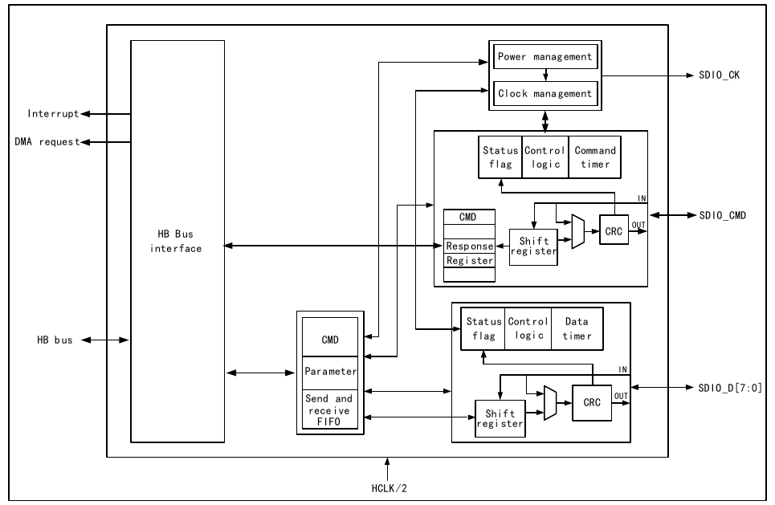
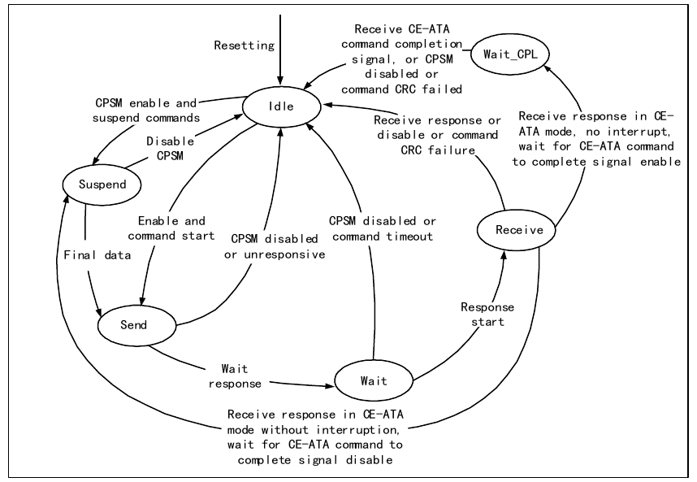
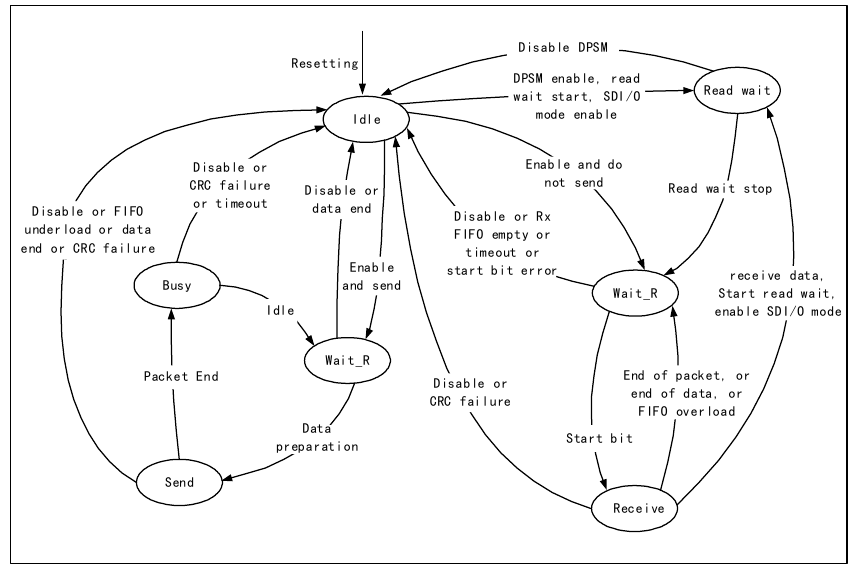
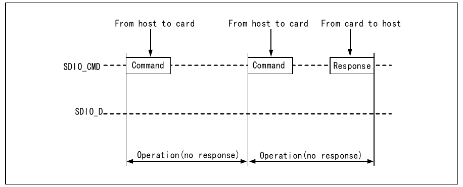
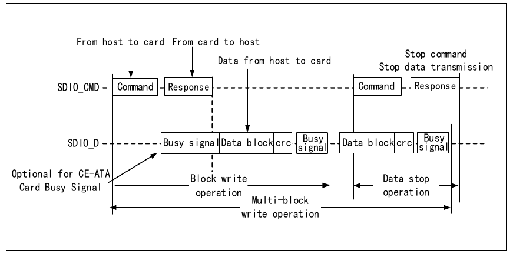
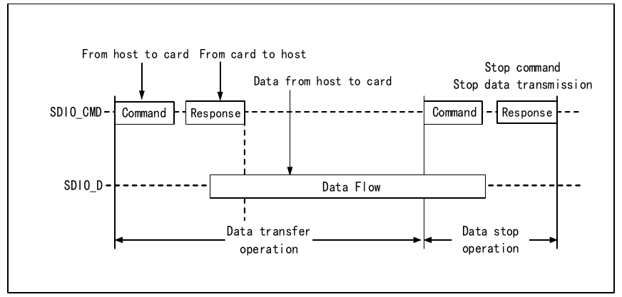
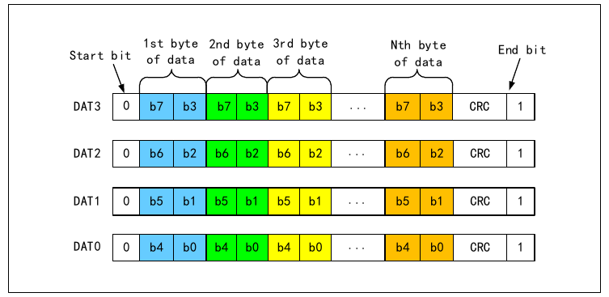
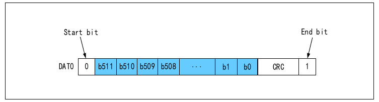
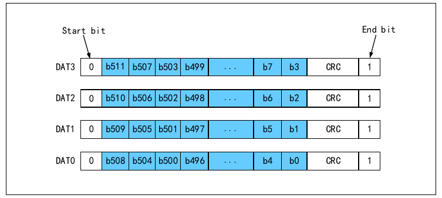
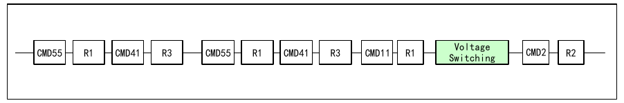

The term "SDIO" in this chapter refers to a communication interface designed on the microcontroller for operating external memory cards such as SD cards or other devices; it is a peripheral of the microcontroller. The microcontroller's SDIO is directly connected to the HB bus, clocked directly by HCLK, enabling high communication speeds. The microcontroller's SDIO acts as the SDIO host, and the controlled devices are collectively referred to as SDIO devices. In applications, SDIO is generally used to read and write SD cards, TF cards, or eMMC cards, or to control other devices that use SDIO as the communication interface, such as WiFi/4G modules.
The microcontroller's SDIO supports communication with memory cards such as SD cards or MMC cards. It should be noted that SDIO only provides a set of clock, data, and command control timing sequences required for a single command transfer as defined by the SD card and MMC card specifications. The sequencing and combination of commands between each other must be determined by the user through programming. In addition, for various memory cards, SDIO can only implement read and write functions. The file system functions provided for files need to be implemented by the user through programming to build the file system.
SDIO is different from the QSPI interface in that it has no chip-select pin, and has an additional CMD pin. The CMD can be considered a special data line dedicated to transmitting commands and responses. SDIO has three selectable data line widths: 1-bit, 4-bit, and 8-bit. The SDIO clock is selectable during configuration. During actual data transmission, the clock supports up to 80 MHz in 4-wire mode and up to 50 MHz in 8-wire mode. According to the protocol, when the clock received by the SDIO device exceeds a certain threshold, the peak waveform of the clock line, data line, and command line needs to be reduced to save the rise and fall time of the waveform.
Unlike SD cards, SDIO cards often refer to non-storage devices such as WiFi/Bluetooth modules and 4G modules that use the SDIO interface. Unless otherwise specified, the content described in this chapter definitely applies to SD cards, and content that only applies to SDIO cards or MMC cards will be specifically noted. In this chapter, SD cards are treated as the primary potential operation target, followed by SDIO cards, and finally MMC cards.
The SDIO receives control from the CPU through the HB bus. The SDIO registers contain a FIFO interface through which the CPU or DMA reads or writes data to obtain or send data. The SDIO is clocked directly by HCLK and has an interrupt entry that supports multiple interrupt sources. The pins directly controlled by the SDIO are SDIO_CK, SDIO_CMD, and SDIO_D[7:0] — a total of ten pins — which connect to the SDIO device. The SDIO is a host-driven communication interface; all transfers must be initiated by the microcontroller.
The structure of the SDIO is shown in Figure 24-1.

The SDIO is a peripheral through which the microcontroller directly operates SDIO devices as the host. It roughly consists of five modules: the HB interface, clock control section, CMD line control section, data line control section, and control register section. The SDIO is a half-duplex peripheral. The CPU writes the commands and data to be sent into the control registers. The command line and data line control modules are responsible for pushing the commands or data onto the IO lines with CRC added. The SDIO data flow is handled by the general-purpose DMA, which moves data from RAM to the SDIO FIFO. The SDIO FIFO has a size of 32 words (32-bit each).
The pins and their modes that need to be configured for the SDIO are shown in Table 24-1.
| SDIO alternate function | Pin mode to be configured | Pin speed to be configured |
|---|---|---|
| SDIO_D[0:3] | Push-pull alternate function output | 50 MHz |
| SDIO_CK | Push-pull alternate function output | 50 MHz |
| SDIO_CMD | Push-pull alternate function output | 50 MHz |
| SDIO_D4 | Push-pull alternate function output | 50 MHz |
| SDIO_D5 | Push-pull alternate function output | 50 MHz |
| SDIO_D6 | Push-pull alternate function output | 50 MHz |
| SDIO_D7 | Push-pull alternate function output | 50 MHz |
The clock pin of the SDIO is SDIO_CK. Its output clock is derived by dividing HCLK. The division factor can be configured to any integer value between 2 and 261. SDIO devices generally only support a single-bus mode with a maximum clock of 400 kHz during initialization. After initialization, the host generally initiates a switch to low-voltage operation while raising the clock to the maximum clock acceptable to both the microcontroller and the SDIO device. The supported clock speeds and switching procedures differ among different versions and speed classes of SD cards; the user needs to understand this independently.
The command workflow of the SDIO follows the state machine shown below.

The data workflow of the SDIO follows the state machine shown below.

Communication on the SDIO uses the transfer as the minimum unit. Each transfer always starts with the host sending a command on the CMD line. After some commands are sent, the SDIO device will also send a segment of data on the CMD line to reply to the host, called a "response." Sometimes it is also accompanied by data transfer, which takes place on the D line. The formats of commands and responses are fixed, and the bit definitions of each field are determined by the specific command or response. Responses and data transfers must be sent or stopped within a specified time after the command or response ends; otherwise, a timeout error will occur.
The purpose of this section is to give users a preliminary understanding of some necessary specification details for using SDIO in a concise manner. It does not guarantee completeness or timely updates. The microcontroller's SDIO only guarantees the hardware operation basis for implementing the SD 2.0, SDIO 2.0, and MMC 4.5 specifications. For functions defined by higher-version specifications, such as double-edge sampling, support is not necessarily provided. Users should program SDIO interactions based on the SD specification, SDIO specification, and MMC specification during actual development.
SD card transfers are always initiated by the host sending a CMD. The SD card may not reply with a response, may reply with a short response or a long response, and some responses are followed by data transfers. In SDIO card or MMC card communication, there may also be cases where the SDIO device actively reports an interrupt. The timing diagrams are shown in the figure set below.



Most SDIO transfers begin with a command (CMD). The SDIO host informs the device of its intention through commands. The command format is shown in the table below.
| Bit/Field name | Start bit | Transmitter bit | Command index | Command parameter | CRC7 | End bit |
|---|---|---|---|---|---|---|
| Bit position/width | 47 | 46 | [45:40]/6 bits | [39:8]/32 bits | [7:1]/7 bits | 0 |
| Value | 0b | 1b | X | X | X | 1b |
There are roughly four types of commands:
The following are some commonly used commands.
Basic commands are some relatively fundamental functions supported by SD cards.
| Command index | Type | Parameter | Response type | Abbreviation | Description |
|---|---|---|---|---|---|
| CMD0 | bc | [31:0] stuffing bits, no meaning | None | GO_IDLE_STATE | Reset all cards to IDLE state. |
| CMD2 | bcr | [31:0] stuffing bits, no meaning | R2 | ALL_SEND_CID | All cards reply with CID. |
| CMD3 | bcr | [31:0] stuffing bits, no meaning | R6 | SEND_RELATIVE_ADDR | Reply with a new RCA. |
| CMD7 | ac | [31:16] RCA; [15:0] stuffing bits, no meaning | R1b | SELECT/DESELECT_CARD | Select or deselect a card. |
| CMD8 | bcr | [31:12] reserved; [11:8] supply voltage; [7:0] check pattern | R7 | SEND_IF_COND | Send SD card interface condition. |
| CMD9 | ac | [31:16] RCA; [15:0] stuffing bits, no meaning | R2 | SEND_CSD | Request CSD. |
| CMD10 | ac | [31:16] RCA; [15:0] stuffing bits, no meaning | R2 | SEND_CID | Request CID. |
| CMD11 | ac | [31:0] stuffing bits, no meaning | R1 | VOLATGE_SWITCH | Switch to 1.8 V voltage level. |
| CMD12 | ac | [31:0] stuffing bits, no meaning | R1b | STOP_TRANSMISSION | Force the card to stop transmission. |
| CMD13 | ac | [31:16] RCA; [15] send task status register; [14:0] stuffing bits | R1 | SEND_STATUS/SEND_TASK_STATUS | Send status or task status register. |
| CMD15 | ac | [31:16] RCA; [15:0] stuffing bits, no meaning | None | GO_INACTIVE_STATE | Request the card to enter INACTIVE mode. |
SD cards also have a FLASH structure and require erasing before writing. However, SD cards have integrated erase logic; if a write command is executed and it is found that erasing has not been done, the erase operation is automatically added. In many cases, especially before large-scale writes, proactively performing an erase helps improve efficiency.
| Command index | Type | Parameter | Response type | Abbreviation | Description |
|---|---|---|---|---|---|
| CMD32 | ac | [31:0] start erase address[2] | R1 | ERASE_WR_BLK_START | Set the first erase address |
| CMD33 | ac | [31:0] end erase address[2] | R1 | ERASE_WR_BLK_END | Set the last erase address |
| CMD38 | ac | [31:0] erase mode | R1b | ERASE | Parameter 0 means normal erase |
| Command index | Type | Parameter | Response type | Abbreviation | Description |
|---|---|---|---|---|---|
| CMD16 | ac | [31:0] block length | R1 | SET_BLOCKLEN | Set block length, 512 |
| CMD17 | adtc | [31:0] single block address[1] | R1 | READ_SINGLE_BLOCK | Set the start address for a single read |
| CMD18 | adtc | [31:0] multiple block address[1] | R1 | READ_MULTIPLE_BLOCK | Continuously transfer data blocks from the card to the host until interrupted by a STOP_TRANSMISSION command |
| CMD19 | adtc | [31:0] reserved bits | R1 | SEND_TUNING_BLOCK | Send a 64-byte sequence indicating mode change |
| CMD20 | ac | [31:28] speed control bits; [27:0] see command description | R1b | SPEED_CLASS_CONTROL | Speed class control command: [27:0] speed class; [27:0] UHS speed class; [27:0] video speed class |
| CMD22 | ac | [31:6] reserved bits; [5:0] extended address | R1 | ADDRESS_EXTENSION | Only used by SDUC |
| CMD23 | ac | [31:0] block counter | R1 | SET_BLOCK_COUNT | Block counter |
| Command index | Type | Parameter | Response type | Abbreviation | Description |
|---|---|---|---|---|---|
| CMD16 | ac | [31:0] block length | R1 | SET_BLOCKLEN | Set block length, 512 |
| CMD24 | adtc | [31:0] block address[1] | R1 | WRITE_BLOCK | Set the start address for a single block write |
| CMD25 | adtc | [31:0] multiple block address[1] | R1 | WRITE_MULTIPLE_BLOCK | Set the start address for a multiple block write |
| CMD27 | adtc | [31:0] stuffing bits | R1 | PROGRAM_CSD | Program the programmable fields of the CSD |
Responses, as the necessary replies from the SDIO device to the host, are also transmitted on the CMD line and must be replied within a specified time. The response is transmitted with the most significant bit first and the least significant bit last. The response length and the definition of each bit and field are determined by the response type, but all responses begin with a start bit fixed at 0, followed by a transmission direction bit fixed at 0[1]. All responses end with a stop bit fixed at 1[1]. There are roughly 7 types of responses. SD cards support R1/R1b/R2/R3/R6/R7, and SDIO cards also support R4/R5. The formats are described below.
A normal response, 48 bits total, with CRC7 check, and the card status field is 32 bits. The format is shown in the table below.
| Bit/Field name | Start bit | Transmitter bit | Response index | Card status | CRC7 | End bit |
|---|---|---|---|---|---|---|
| Bit position/width | 47 | 46 | [45:40]/6 bits | [39:8]/32 bits | [7:1]/7 bits | 0 |
| Value | 0b | 0b | Follows CMD index | X | X | 1b |
The format of R1b is the same as R1, but a busy signal can be added after the response, i.e., clamping the data line D2 low. After the host receives the busy signal (detecting SDIO_D2 low), it needs to handle it accordingly.
A response to certain specific commands, 136 bits total, with CRC7 check included in the card status field, and the card status field is 128 bits. The card status field stores the value of the CID register or CSD register. The CID register is generally the reply to CMD2/CMD10, and the CSD register is generally the reply to CMD9. The specific meaning of the CID/CSD registers is described in section 28.4.2 Device Registers. Note that R2 only replies with the [127:1] segment of the CID/CSD register. The reserved bit CID/CSD[0] fixed at 1[2] is occupied by the end bit, which is also fixed at 1. The format is shown in the table below.
| Bit/Field name | Start bit | Transmitter bit | Command index | Card status | End bit |
|---|---|---|---|---|---|
| Bit position/width | 135 | 134 | [133:128]/6 bits | [127:1]/127 bits | 0 |
| Value | 0b | 0b | 111111b | CID/CSD | 1b |
A dedicated response that replies with the OCR register, 48 bits total, with no CRC7 check. The OCR register is generally the reply to ACMD41. The format is shown in the table below.
| Bit/Field name | Start bit | Transmitter bit | Command index | Card status | Reserved | End bit |
|---|---|---|---|---|---|---|
| Bit position/width | 47 | 46 | [45:40]/6 bits | [39:8]/32 bits | [7:1]/7 bits | 0 |
| Value | 0b | 0b | 111111b | OCR | 1111111b | 1b |
A dedicated response to CMD5 that replies with the OCR and related registers, 48 bits total, with CRC7 check. R4 is used in SDIO cards. The format is shown in the table below.
| Bit/Field name | Bit position | Width (bits) | Value |
|---|---|---|---|
| Start bit | 47 | 1 | 0b |
| Transmitter bit | 46 | 1 | 0b |
| Reserved | [45:40] | 6 | 111111b |
| Card ready | 39 | 1 | X |
| Number of IO functions | [38:36] | 3 | X |
| Current register | [35] | 1 | X |
| Stuff bits | [34:33] | 2 | 00b |
| S18A | 32 | 1 | X |
| IO OCR | [31:8] | 24 | OCR |
| CRC check field | [7:1] | 7 | 1111111b |
| End bit | 0 | 1 | 1b |
A dedicated response to CMD5, 48 bits total, with CRC7 check. R5 is used in SDIO cards. The format is shown in the table below.
| Bit/Field name | Start bit | Transmitter bit | Command index | Stuff bits | Response format | Read/write data | CRC7 | End bit |
|---|---|---|---|---|---|---|---|---|
| Bit position | 47 | 46 | [45:40] | [39:24] | [23:16] | [15:8] | [7:1] | 0 |
| Width | 1 | 1 | 6 | 16 | 8 | 8 | 7 | 1 |
| Value | 0b | 0b | 110100b | 0000h | X | X | X | 1b |
A dedicated response that replies with the RCA, 48 bits total, with CRC7 check. The format is shown in the table below.
| Bit/Field name | Start bit | Transmitter bit | Command index | Card RCA | Card status bits | CRC7 | End bit |
|---|---|---|---|---|---|---|---|
| Bit position | 47 | 46 | [45:40] | [39:24] | [23:8] | [7:1] | 0 |
| Width | 1 | 1 | 6 | 16 | 16 | 7 | 1 |
| Value | 0b | 0b | 000011b | X | X | X | 1b |
A dedicated response to CMD8, indicating the supported voltage information, 48 bits total, with CRC7 check. The format is shown in the table below.
| Bit/Field name | Start bit | Transmitter bit | Command index | Reserved | PCIe 1V2 support | PCIe response | Accepted voltage | Check pattern | CRC7 | End bit |
|---|---|---|---|---|---|---|---|---|---|---|
| Bit position | 47 | 46 | [45:40] | [39:22] | 21 | 20 | [19:16] | [15:8] | [7:1] | 0 |
| Width | 1 | 1 | 6 | 18 | 1 | 1 | 4 | 8 | 7 | 1 |
| Value | 0b | 0b | 001000b | 00000h | X | X | X | X | X | 1b |
Data transfer takes place on the data line SDIO_D, with three widths: 1/4/8 bits. During data transfer, a start bit of one clock period generally precedes the data, and each byte is transmitted with the most significant bit first and the least significant bit last. For SD cards, which only support block transfer mode, each block of data transfer is followed by a CRC check.
By enabling the RANDOM_LEN_EN bit, configuring the byte length represented by DBLOCKSIZE2, configuring the total transfer data length represented by R32_SDIO_DLEN, enabling the DTEN bit, and writing data to R32_SDIO_FIFO, block transfer of any byte length with CRC check can be accomplished.
MMC cards also support data stream transfer mode, which does not include CRC. The format of data transfer is shown in the figure below.



By enabling the SLV_MODE bit, the controller enters a state waiting for host commands. The received command parameters are placed in RESP1, the received command index is placed in RESP2, and an R1-type response is automatically sent to the host, with the response parameter being the value of CMDARG.
For data transmission and reception in slave mode, refer to the master mode. However, the slave can use the SLV_FORCE_ERR bit to force a data block CRC error, thereby indicating an undesired read or write.
The Operation Conditions Register stores information about the supply voltage accepted by the SD card and related status bits. The relevant bit definitions are shown in the table below.
| Bit position | Bit definition | Description |
|---|---|---|
| [0:3] | Reserved | |
| 4 | Reserved | |
| 5 | Reserved | |
| 6 | Reserved | |
| 7 | Reserved for low voltage range | |
| 8 | Reserved | |
| 9 | Reserved | |
| 10 | Reserved | |
| 11 | Reserved | |
| 12 | Reserved | |
| 13 | Reserved | Supported VDD33 voltage range, in volts |
| 14 | Reserved | |
| 15 | 2.7-2.8 | |
| 16 | 2.8-2.9 | |
| 17 | 2.9-3.0 | |
| 18 | 3.0-3.1 | |
| 19 | 3.1-3.2 | |
| 20 | 3.2-3.3 | |
| 21 | 3.3-3.4 | |
| 22 | 3.4-3.5 | |
| 23 | 3.5-3.6 | |
| 24 | Accept switching to 1.8 V | |
| [25:26] | Reserved | |
| 27 | Over 2 TB support status bit | |
| 28 | Reserved | |
| 29 | UHS-II card status bit | When this bit is set, it indicates that this card supports the UHS-II interface |
| 30 | Card capacity status (CCS) | When this bit is set, it indicates that the card capacity is greater than 2 GB |
| 31 | Card power-up status bit (busy) | This bit is set after the card completes power-up. After power-up is complete, the other bits become meaningful |
The CID stores some identification information.
| Bit/Field name | Abbreviation | Width | Bit position |
|---|---|---|---|
| Manufacturer ID | MID | 8 | [127:120] |
| Application ID | OID | 16 | [119:104] |
| Product name | PNM | 40 | [103:64] |
| Product revision | PRV | 8 | [63:56] |
| Product serial number | PSN | 32 | [55:24] |
| Reserved | None | 4 | [23:20] |
| Manufacturing date | MDT | 12 | [19:8] |
| CRC7 | CRC | 7 | [7:1] |
| Fixed bit, fixed at 1 | None | 1 | [0] |
The CSD register stores the characteristic data of the SD card. Taking the most commonly used second-version CSD for SDHC and SDXC cards as an example, the field definitions are shown in the table below.
| Name | Abbreviation | Width | Value | Read/Write | Bit position |
|---|---|---|---|---|---|
| CSD version | CSD_STRUCTURE | 2 | 01b | RO | [127:126] |
| Reserved | None | 6 | 00_0000b | RO | [125:120] |
| Read access time | TAAC | 8 | 0Eh | RO | [119:112] |
| Read access time in clock cycles | NSAC | 8 | 00h | RO | [111:104] |
| Maximum data transfer speed | TRAN_SPEED | 8 | 32h/5Ah/0Bh/2Bh | RO | [103:96] |
| Card command classes | CCC | 12 | X1X1101101X1b | RO | [95:84] |
| Maximum read data block length | READ_BL_LEN | 4 | 9 | RO | [83:80] |
| Partial blocks read allowed | READ_BL_PARTIAL | 1 | 0 | RO | [79] |
| Write block misalignment | WRITE_BLK_MISALIGN | 1 | 0 | RO | [78] |
| Read block misalignment | READ_BLK_MISALIGN | 1 | 0 | RO | [77] |
| DSR implemented | DSR_IMP | 1 | X | RO | [76] |
| Reserved | None | 6 | 00_0000b | RO | [75:70] |
| Device size | C_SIZE | 22 | XXXXXXh | RO | [69:48] |
| Reserved | None | 1 | 0 | RO | [47] |
| Single block erase enabled | ERASE_BLK_EN | 1 | 1 | RO | [46] |
| Erase sector size | SECTOR_SIZE | 7 | 7Fh | RO | [45:39] |
| Write protect group size | WP_GRP_SIZE | 7 | 0000000b | RO | [38:32] |
| Write protect group enable | WP_GRP_ENABLE | 1 | 0 | RO | [31] |
| Reserved | None | 2 | 00b | RO | [30:29] |
| Write speed factor | R2W_FACTOR | 3 | 010b | RO | [28:26] |
| Maximum write data block length | WRITE_BL_LEN | 4 | 9 | RO | [25:22] |
| Partial blocks write allowed | WRITE_BL_PARTIAL | 1 | 0 | RO | [21] |
| Reserved | None | 5 | 00000b | RO | [20:16] |
| File format group | FILE_FORMAT_GRP | 1 | 0 | RO | [15] |
| Copy flag | TMP_WRITE_PROTECT | 1 | X | RW OTP | [14] |
| Permanent write protect | PERM_WRITE_PROTECT | 1 | X | RW OTP | [13] |
| Temporary write protect | TMP_WRITE_PROTECT | 1 | X | RW | [12] |
| File format | FILE_FOMAT | 2 | 00b | RO | [11:10] |
| Reserved | None | 2 | 00b | RO | [9:8] |
| CRC | CRC | 7 | 0000000b | RW | [7:1] |
| Unused, must be 1 | None | 1 | 1b | RO | [0] |
The Relative Card Address register stores the card address, is 16 bits, and the default value is 0.
In the later stages of SD card initialization, an interface level switch is required to switch the IO level of the SD card's clock line, data line, and command line to the 1.8 V level. For devices with insufficient slew rate, using a lower level standard helps improve frequency. However, the SD power supply voltage does not necessarily change; only in newer versions of the protocol do SD cards with low-voltage power supply appear.
The voltage switching steps are shown in the figure below.

During initialization, the SD card clock is only 400 kHz. After the voltage switch is complete, the clock can be raised to a higher level, for example, the first speed class of UHS-I mode for SDHC cards, where the bus clock can reach 80 MHz. Given the IO output capability of the microcontroller, the clock should be limited to within 50 MHz.
The SDIO supports multiple interrupt sources. As shown in the interrupt enable register (R32_SDIO_IER), there are 24 conditions that can trigger interrupts. The user can enable them as needed.
It should be noted that not only can the SDIO peripheral report interrupts to the CPU, but external SDIO cards and MMC cards can also report interrupts to the SDIO peripheral. In 4-bit bus mode, the interrupt line is D1; in 8-bit bus mode, the interrupt line is D7, both active low. If the SDIO detects D1 or D7 low in the idle state, it should read the SDIO device's status register or interrupt flag register to respond to the interrupt in a timely manner. The CPU can determine whether the SDIO host has received an interrupt through the SDIOIT bit of the R32_SDIO_STA register.
| Name | Address | Description | Reset Value |
|---|---|---|---|
| R32_SDIO_POWER | 0x40018000 | Power register | 0x00000000 |
| R32_SDIO_CLKCR | 0x40018004 | Clock register | 0x00000000 |
| R32_SDIO_ARG | 0x40018008 | Command argument register | 0x00000000 |
| R32_SDIO_CMD | 0x4001800C | Command register | 0x00000000 |
| R32_SDIO_RESPCMD | 0x40018010 | Response register | 0x00000000 |
| R128_SDIO_RESPX | 0x40018014 | Response parameter register | 0x00000000 |
| R32_SDIO_DTIMER | 0x40018024 | Data timer register | 0x00000000 |
| R32_SDIO_DLEN | 0x40018028 | Transfer length register | 0x00000000 |
| R32_SDIO_DCTLR | 0x4001802C | Data control register | 0x00000000 |
| R32_SDIO_DCOUNT | 0x40018030 | Transfer count register | 0x00000000 |
| R32_SDIO_STA | 0x40018034 | Status register | 0x00000000 |
| R32_SDIO_ICR | 0x40018038 | Interrupt clear register | 0x00000000 |
| R32_SDIO_MASK | 0x4001803C | Interrupt enable register | 0x00000000 |
| R32_SDIO_FIFOCNT | 0x40018048 | FIFO counter | 0x00000000 |
| R32_SDIO_DCTRL2 | 0x40018060 | Data control register 2 | 0x00000000 |
| R32_SDIO_FIFO | 0x40018080 | FIFO register | 0x00000000 |
Offset address: 0x00
| 31 | 30 | 29 | 28 | 27 | 26 | 25 | 24 | 23 | 22 | 21 | 20 | 19 | 18 | 17 | 16 |
|---|---|---|---|---|---|---|---|---|---|---|---|---|---|---|---|
| Reserved | |||||||||||||||
| 15 | 14 | 13 | 12 | 11 | 10 | 9 | 8 | 7 | 6 | 5 | 4 | 3 | 2 | 1 | 0 |
|---|---|---|---|---|---|---|---|---|---|---|---|---|---|---|---|
| Reserved | PWRCTRL[1:0] | ||||||||||||||
| Bits | Name | Access | Description | Reset |
|---|---|---|---|---|
| [31:2] | Reserved | RO | Reserved. | 0 |
| [1:0] | PWRCTRL[1:0] | RW | Power control bits: 00: Power off, clock stopped; 01: Reserved; 10: Reserved power-up state; 11: Power-up state, card clock enabled. | 0 |
Offset address: 0x04
| 31 | 30 | 29 | 28 | 27 | 26 | 25 | 24 | 23 | 22 | 21 | 20 | 19 | 18 | 17 | 16 |
|---|---|---|---|---|---|---|---|---|---|---|---|---|---|---|---|
| Reserved | |||||||||||||||
| 15 | 14 | 13 | 12 | 11 | 10 | 9 | 8 | 7 | 6 | 5 | 4 | 3 | 2 | 1 | 0 |
|---|---|---|---|---|---|---|---|---|---|---|---|---|---|---|---|
| Reserved | HWFC_EN | NEGEDGE | WIDBUS[1:0] | BYPASS | PWRSAV | CLKEN | CLKDIV[7:0] | ||||||||
| Bits | Name | Access | Description | Reset |
|---|---|---|---|---|
| [31:15] | Reserved | RO | Reserved. | 0 |
| 14 | HWFC_EN | RW | Hardware flow control enable bit. When this bit is set, the TXFIFOE and RXFIFOF signals take effect. 1: Enable hardware flow control; 0: Disable hardware flow control. | 0 |
| 13 | NEGEDGE | RW | SDIO_CK phase selection bit: 1: Generate SDIO_CK on the falling edge of HCLK; 0: Generate SDIO_CK on the rising edge of HCLK. | 0 |
| [12:11] | WIDBUS[1:0] | RW | Bus width configuration field: 00: 1-bit bus mode, uses SDIO_D0; 01: 4-bit bus mode, uses SDIO_D[3:0]; 10: 8-bit bus mode, uses SDIO_D[7:0]; 11: Not used. | 0 |
| 10 | BYPASS | RW | Clock bypass enable bit: 1: SDIO_CK is directly connected to HCLK; 0: SDIO_CK is derived through the divider. Note: When using this bit, the HWFC_EN bit must be enabled. | 0 |
| 9 | PWRSAV | RW | Clock state configuration when idle. When this bit is set, SDIO_CK output is turned off when the bus is idle to save power. 1: SDIO_CK output only when needed; 0: SDIO_CK always outputs. | 0 |
| 8 | CLKEN | RW | Clock enable bit: 1: SDIO_CK output enabled; 0: SDIO_CK output disabled. | 0 |
| [7:0] | CLKDIV[7:0] | RW | Clock division factor field. This field represents the relationship between SDIO_CK and HCLK. SDIO_CK = HCLK / (CLKDIV + 2). Note that during the initialization phase, SDIO_CK should be below 400 kHz. | 0 |
Offset address: 0x08
| 31 | 30 | 29 | 28 | 27 | 26 | 25 | 24 | 23 | 22 | 21 | 20 | 19 | 18 | 17 | 16 |
|---|---|---|---|---|---|---|---|---|---|---|---|---|---|---|---|
| CMDARG[31:16] | |||||||||||||||
| 15 | 14 | 13 | 12 | 11 | 10 | 9 | 8 | 7 | 6 | 5 | 4 | 3 | 2 | 1 | 0 |
|---|---|---|---|---|---|---|---|---|---|---|---|---|---|---|---|
| CMDARG[15:0] | |||||||||||||||
| Bits | Name | Access | Description | Reset |
|---|---|---|---|---|
| [31:0] | CMDARG | RW | Master mode: Command argument field. This field stores the parameters of the command, which are sent as part of the command onto the CMD line. Slave mode: 32-bit response parameter register for slave reply. | 0 |
Offset address: 0x0C
| 31 | 30 | 29 | 28 | 27 | 26 | 25 | 24 | 23 | 22 | 21 | 20 | 19 | 18 | 17 | 16 |
|---|---|---|---|---|---|---|---|---|---|---|---|---|---|---|---|
| Reserved | |||||||||||||||
| 15 | 14 | 13 | 12 | 11 | 10 | 9 | 8 | 7 | 6 | 5 | 4 | 3 | 2 | 1 | 0 |
|---|---|---|---|---|---|---|---|---|---|---|---|---|---|---|---|
| Reserved | ATACMD | NIEN | ENCMDCompl | SDIOSuspend | CPSMEN | WAITPEND | WAITINT | WAITRESP[1:0] | CMDINDEX[5:0] | ||||||
| Bits | Name | Access | Description | Reset |
|---|---|---|---|---|
| [31:15] | Reserved | RO | Reserved. | 0 |
| 14 | ATACMD | RW | CE-ATA command. If this bit is set, CPSM will go to CMD61. | 0 |
| 13 | NIEN | RW | CE-ATA interrupt not enable bit. If this bit is set, CE-ATA will not generate an interrupt. | 0 |
| 12 | ENCMDCompl | RW | Enable CMD completion signal enable bit. If this bit is set, command completion will generate a signal. | 0 |
| 11 | SDIOSuspend | RW | Suspend command send bit. If this bit is set, a suspend signal will be sent. Only applicable to SDIO cards. | 0 |
| 10 | CPSMEN | RW | CPSM (Command Path State Machine) enable bit. If this bit is set, CPSM is enabled. | 0 |
| 9 | WAITPEND | RW | Command wait control bit. If this bit is set, CPSM waits for data transfer to complete before sending the command. | 0 |
| 8 | WAITINT | RW | Command wait interrupt control bit. If this bit is set, CPSM disables timeout control and waits for an interrupt to be generated. | 0 |
| [7:6] | WAITRESP[1:0] | RW | Response type field. This field indicates the type of response expected by CPSM. 00: No response, wait for CMDSENT flag; 01: Short response, wait for CMDREND or CCRCFAIL flag; 10: No response, wait for CMDSENT flag; 11: Long response, wait for CMDREND or CCRCFAIL flag. | 0 |
| [5:0] | CMDINDEX[5:0] | RW | Command index field. This field indicates the specific command value. | 0 |
Offset address: 0x10
| 31 | 30 | 29 | 28 | 27 | 26 | 25 | 24 | 23 | 22 | 21 | 20 | 19 | 18 | 17 | 16 |
|---|---|---|---|---|---|---|---|---|---|---|---|---|---|---|---|
| Reserved | |||||||||||||||
| 15 | 14 | 13 | 12 | 11 | 10 | 9 | 8 | 7 | 6 | 5 | 4 | 3 | 2 | 1 | 0 |
|---|---|---|---|---|---|---|---|---|---|---|---|---|---|---|---|
| Reserved | RESPCMD[5:0] | ||||||||||||||
| Bits | Name | Access | Description | Reset |
|---|---|---|---|---|
| [31:6] | Reserved | RO | Reserved. | 0 |
| [5:0] | RESPCMD[5:0] | RO | This field records the index value of the received response. | 0 |
| Bits | Name | Access | Description | Reset |
|---|---|---|---|---|
| [127:0] | CARDSTATUSx | RO | Master mode: When the response is a long response, all 128 bits represent the card status; when the response is a short response, the lower 32 bits represent the card status. The SDIO peripheral receives the most significant bit of the card status first and stores it starting from the least significant bit of R128_SDIO_RESPX. | 0 |
Offset address: 0x14
| 31 | 30 | 29 | 28 | 27 | 26 | 25 | 24 | 23 | 22 | 21 | 20 | 19 | 18 | 17 | 16 |
|---|---|---|---|---|---|---|---|---|---|---|---|---|---|---|---|
| CARDSTATUS1[127:112] | |||||||||||||||
| 15 | 14 | 13 | 12 | 11 | 10 | 9 | 8 | 7 | 6 | 5 | 4 | 3 | 2 | 1 | 0 |
|---|---|---|---|---|---|---|---|---|---|---|---|---|---|---|---|
| CARDSTATUS1[111:96] | |||||||||||||||
| Bits | Name | Access | Description | Reset |
|---|---|---|---|---|
| [31:0] | CARDSTATUS1 | RO | Master mode: Card status [127:96]; Slave mode: Received command parameters. | 0 |
Offset address: 0x18
| 31 | 30 | 29 | 28 | 27 | 26 | 25 | 24 | 23 | 22 | 21 | 20 | 19 | 18 | 17 | 16 |
|---|---|---|---|---|---|---|---|---|---|---|---|---|---|---|---|
| CARDSTATUS2[95:80] | |||||||||||||||
| 15 | 14 | 13 | 12 | 11 | 10 | 9 | 8 | 7 | 6 | 5 | 4 | 3 | 2 | 1 | 0 |
|---|---|---|---|---|---|---|---|---|---|---|---|---|---|---|---|
| CARDSTATUS2[79:64] | |||||||||||||||
| Bits | Name | Access | Description | Reset |
|---|---|---|---|---|
| [31:0] | CARDSTATUS2 | RO | Master mode: Card status [95:64]; Slave mode: Received command index. | 0 |
Offset address: 0x1C
| 31 | 30 | 29 | 28 | 27 | 26 | 25 | 24 | 23 | 22 | 21 | 20 | 19 | 18 | 17 | 16 |
|---|---|---|---|---|---|---|---|---|---|---|---|---|---|---|---|
| CARDSTATUS3[63:48] | |||||||||||||||
| 15 | 14 | 13 | 12 | 11 | 10 | 9 | 8 | 7 | 6 | 5 | 4 | 3 | 2 | 1 | 0 |
|---|---|---|---|---|---|---|---|---|---|---|---|---|---|---|---|
| CARDSTATUS3[47:32] | |||||||||||||||
| Bits | Name | Access | Description | Reset |
|---|---|---|---|---|
| [31:0] | CARDSTATUS3 | RO | Master mode: Card status [63:32]. | 0 |
Offset address: 0x20
| 31 | 30 | 29 | 28 | 27 | 26 | 25 | 24 | 23 | 22 | 21 | 20 | 19 | 18 | 17 | 16 |
|---|---|---|---|---|---|---|---|---|---|---|---|---|---|---|---|
| CARDSTATUS4[31:16] | |||||||||||||||
| 15 | 14 | 13 | 12 | 11 | 10 | 9 | 8 | 7 | 6 | 5 | 4 | 3 | 2 | 1 | 0 |
|---|---|---|---|---|---|---|---|---|---|---|---|---|---|---|---|
| CARDSTATUS4[15:0] | |||||||||||||||
| Bits | Name | Access | Description | Reset |
|---|---|---|---|---|
| [31:0] | CARDSTATUS4 | RO | Master mode: Card status [31:0]. | 0 |
Offset address: 0x24
| 31 | 30 | 29 | 28 | 27 | 26 | 25 | 24 | 23 | 22 | 21 | 20 | 19 | 18 | 17 | 16 |
|---|---|---|---|---|---|---|---|---|---|---|---|---|---|---|---|
| DATATIME[31:16] | |||||||||||||||
| 15 | 14 | 13 | 12 | 11 | 10 | 9 | 8 | 7 | 6 | 5 | 4 | 3 | 2 | 1 | 0 |
|---|---|---|---|---|---|---|---|---|---|---|---|---|---|---|---|
| DATATIME[15:0] | |||||||||||||||
| Bits | Name | Access | Description | Reset |
|---|---|---|---|---|
| [31:0] | DATATIME | RW | Data timeout duration. In units of SDIO_CK cycles. | 0 |
Offset address: 0x28
| 31 | 30 | 29 | 28 | 27 | 26 | 25 | 24 | 23 | 22 | 21 | 20 | 19 | 18 | 17 | 16 |
|---|---|---|---|---|---|---|---|---|---|---|---|---|---|---|---|
| Reserved | DATALENGTH[24:16] | ||||||||||||||
| 15 | 14 | 13 | 12 | 11 | 10 | 9 | 8 | 7 | 6 | 5 | 4 | 3 | 2 | 1 | 0 |
|---|---|---|---|---|---|---|---|---|---|---|---|---|---|---|---|
| DATALENGTH[15:0] | |||||||||||||||
| Bits | Name | Access | Description | Reset |
|---|---|---|---|---|
| [31:25] | Reserved | RO | Reserved. | 0 |
| [24:0] | DATALENGTH[24:0] | RW | Transfer data length field. The value of this field is loaded into the transfer counter when the transfer is started. For block transfer, the value of this field must be an integer multiple of the block size. The block size is defined by the SDIO device and is stored in R32_SDIO_DCTLR[7:4]; a common value is 512 B, etc. | 0 |
Offset address: 0x2C
| 31 | 30 | 29 | 28 | 27 | 26 | 25 | 24 | 23 | 22 | 21 | 20 | 19 | 18 | 17 | 16 |
|---|---|---|---|---|---|---|---|---|---|---|---|---|---|---|---|
| Reserved | |||||||||||||||
| 15 | 14 | 13 | 12 | 11 | 10 | 9 | 8 | 7 | 6 | 5 | 4 | 3 | 2 | 1 | 0 |
|---|---|---|---|---|---|---|---|---|---|---|---|---|---|---|---|
| Reserved | SDIOEN | RWMOD | RWSTOP | RWSTART | DBLOCKSIZE[3:0] | DMAEN | DTMODE | DTDIR | DTEN | ||||||
| Bits | Name | Access | Description | Reset |
|---|---|---|---|---|
| [31:12] | Reserved | RO | Reserved. | 0 |
| 11 | SDIOEN | RW | SDIO enable bit. When this bit is set, DPSM can perform some operations specific to SDIO cards. | 0 |
| 10 | RWMOD | RW | Read wait mode: 1: Use SDIO_D2 to control read wait; 0: Stop SDIO_CK to control read wait. | 0 |
| 9 | RWSTOP | RW | Read wait stop bit. If the RWSTART bit is set, the read wait will be stopped. | 0 |
| 8 | RWSTART | RW | Read wait start bit. Setting this bit will execute a read wait operation. | 0 |
| [7:4] | DBLOCKSIZE[3:0] | RW | Data block length field. This field stores the length of the data block. The block transfer length must be defined before block transfer. The value that can be written to this field is between 0 and 1110b, representing a block transfer length of 2BLKLEN, i.e., between 0 and 16384 bytes. | 0 |
| 3 | DMAEN | RW | DMA enable bit: 1: Enable DMA; 0: Disable DMA. | 0 |
| 2 | DTMODE | RW | Transfer mode setting bit. Setting this bit sets the transfer mode. 1: Stream transfer; 0: Block transfer. | 0 |
| 1 | DTDIR | RW | Transfer direction setting bit. Setting this bit sets the transfer direction. 1: Card to controller; 0: Controller to card. | 0 |
| 0 | DTEN | RW | Transfer enable bit. Setting this bit starts data transfer. The specific process is: after setting this bit, DPSM enters the Wait_S or Wait_R flow (depending on the transfer direction). | 0 |
Offset address: 0x30
| 31 | 30 | 29 | 28 | 27 | 26 | 25 | 24 | 23 | 22 | 21 | 20 | 19 | 18 | 17 | 16 |
|---|---|---|---|---|---|---|---|---|---|---|---|---|---|---|---|
| Reserved | DATACOUNT[24:16] | ||||||||||||||
| 15 | 14 | 13 | 12 | 11 | 10 | 9 | 8 | 7 | 6 | 5 | 4 | 3 | 2 | 1 | 0 |
|---|---|---|---|---|---|---|---|---|---|---|---|---|---|---|---|
| DATACOUNT[15:0] | |||||||||||||||
| Bits | Name | Access | Description | Reset |
|---|---|---|---|---|
| [31:25] | Reserved | RO | Reserved. | 0 |
| [24:0] | DATACOUNT[24:0] | RO | Transfer data counter field. When the transfer is started, the value of the transfer length register is loaded into this counter and decremented during the transfer process. | 0 |
Offset address: 0x34
| 31 | 30 | 29 | 28 | 27 | 26 | 25 | 24 | 23 | 22 | 21 | 20 | 19 | 18 | 17 | 16 |
|---|---|---|---|---|---|---|---|---|---|---|---|---|---|---|---|
| Reserved | CEATAEND | SDIOIT | RXDAVL | TXDAVL | RXFIFOE | TXFIFOE | RXFIFOF | TXFIFOF | |||||||
| 15 | 14 | 13 | 12 | 11 | 10 | 9 | 8 | 7 | 6 | 5 | 4 | 3 | 2 | 1 | 0 |
|---|---|---|---|---|---|---|---|---|---|---|---|---|---|---|---|
| RXFIFOHF | TXFIFOHE | RXACT | TXACT | CMDACT | DBCKEND | STBITERR | DATAEND | CMDSENT | CMDREND | RXOVERR | TXUNDERR | DTIMEOUT | CTIMEOUT | DCRCFAIL | CCRCFAIL |
| Bits | Name | Access | Description | Reset |
|---|---|---|---|---|
| [31:24] | Reserved | RO | Reserved. | 0 |
| 23 | CEATAEND | RO | When this bit is set, CMD61 received CE-ATA completion signal. | 0 |
| 22 | SDIOIT | RO | When this bit is set, SDIO received a device interrupt. | 0 |
| 21 | RXDAVL | RO | When this bit is set, receive FIFO data available. | 0 |
| 20 | TXDAVL | RO | When this bit is set, data available in transmit FIFO. | 0 |
| 19 | RXFIFOE | RO | When this bit is set, receive FIFO empty. | 0 |
| 18 | TXFIFOE | RO | When this bit is set, transmit FIFO empty. | 0 |
| 17 | RXFIFOF | RO | When this bit is set, receive FIFO full. | 0 |
| 16 | TXFIFOF | RO | When this bit is set, transmit FIFO full. | 0 |
| 15 | RXFIFOHF | RO | When this bit is set, receive FIFO half full. | 0 |
| 14 | TXFIFOHE | RO | When this bit is set, transmit FIFO half empty. | 0 |
| 13 | RXACT | RO | When this bit is set, data is being received. | 0 |
| 12 | TXACT | RO | When this bit is set, data is being transmitted. | 0 |
| 11 | CMDACT | RO | When this bit is set, command is being transferred. | 0 |
| 10 | DBCKEND | RO | When this bit is set, a data block has been sent or received and CRC check passed. | 0 |
| 9 | STBITERR | RO | When this bit is set, in wide bus mode, no start signal was detected on any data line. | 0 |
| 8 | DATAEND | RO | When this bit is set, data transfer ended (transfer counter is zero). | 0 |
| 7 | CMDSENT | RO | When this bit is set, the command has been sent out. | 0 |
| 6 | CMDREND | RO | When this bit is set, a response has been received and CRC check succeeded. | 0 |
| 5 | RXOVERR | RO | When this bit is set, receive FIFO overrun. | 0 |
| 4 | TXUNDERR | RO | When this bit is set, transmit FIFO underrun. | 0 |
| 3 | DTIMEOUT | RO | When this bit is set, data timeout. | 0 |
| 2 | CTIMEOUT | RO | When this bit is set, command timeout exceeded 64 SDIO_CK cycles. | 0 |
| 1 | DCRCFAIL | RO | When this bit is set, a data block has been sent or received but CRC check failed. | 0 |
| 0 | CCRCFAIL | RO | When this bit is set, a response has been received but CRC check failed. | 0 |
Offset address: 0x38
| 31 | 30 | 29 | 28 | 27 | 26 | 25 | 24 | 23 | 22 | 21 | 20 | 19 | 18 | 17 | 16 |
|---|---|---|---|---|---|---|---|---|---|---|---|---|---|---|---|
| Reserved | CEATAENDC | SDIOITC | Reserved | ||||||||||||
| 15 | 14 | 13 | 12 | 11 | 10 | 9 | 8 | 7 | 6 | 5 | 4 | 3 | 2 | 1 | 0 |
|---|---|---|---|---|---|---|---|---|---|---|---|---|---|---|---|
| Reserved | DBCKENDC | STBITERRC | DATAENDC | CMDSENTC | CMDRENDC | RXOVERRC | TXUNDERRC | DTIMEOUTC | CTIMEOUTC | DCRCFAILC | CCRCFAILC | ||||
| Bits | Name | Access | Description | Reset |
|---|---|---|---|---|
| [31:24] | Reserved | RO | Reserved. | 0 |
| 23 | CEATAENDC | RW | Setting this bit clears the CEATAEND bit in the status register. | 0 |
| 22 | SDIOITC | RW | Setting this bit clears the SDIOIT bit in the status register. | 0 |
| [21:11] | Reserved | RW | Reserved. | 0 |
| 10 | DBCKENDC | RW | Setting this bit clears the DBCKEND bit in the status register. | 0 |
| 9 | STBITERRC | RW | Setting this bit clears the STBITERR bit in the status register. | 0 |
| 8 | DATAENDC | RW | Setting this bit clears the DATAEND bit in the status register. | 0 |
| 7 | CMDSENTC | RW | Setting this bit clears the CMDSENT bit in the status register. | 0 |
| 6 | CMDRENDC | RW | Setting this bit clears the CMDREND bit in the status register. | 0 |
| 5 | RXOVERRC | RW | Setting this bit clears the RXOVERR bit in the status register. | 0 |
| 4 | TXUNDERRC | RW | Setting this bit clears the TXUNDERR bit in the status register. | 0 |
| 3 | DTIMEOUTC | RW | Setting this bit clears the DTIMEOUT bit in the status register. | 0 |
| 2 | CTIMEOUTC | RW | Setting this bit clears the CTIMEOUT bit in the status register. | 0 |
| 1 | DCRCFAILC | RW | Setting this bit clears the DCRCFAIL bit in the status register. | 0 |
| 0 | CCRCFAILC | RW | Setting this bit clears the CCRCFAIL bit in the status register. | 0 |
Offset address: 0x3C
| 31 | 30 | 29 | 28 | 27 | 26 | 25 | 24 | 23 | 22 | 21 | 20 | 19 | 18 | 17 | 16 | |
|---|---|---|---|---|---|---|---|---|---|---|---|---|---|---|---|---|
| Reserved | CEATAENDIE | SDIOITIE | RXDAVLIE | TXDAVLIE | RXFIFOEIE | TXFIFOEIE | RXFIFOFIE | TXFIFOFIE | ||||||||
| 15 | 14 | 13 | 12 | 11 | 10 | 9 | 8 | 7 | 6 | 5 | 4 | 3 | 2 | 1 | 0 |
|---|---|---|---|---|---|---|---|---|---|---|---|---|---|---|---|
| RXFIFOHFIE | TXFIFOHEIE | RXACTIE | TXACTIE | CMDACTIE | DBCKENDIE | STBITERRIE | DATAENDIE | CMDSENTIE | CMDRENDIE | RXOVERRIE | TXUNDERRIE | DTIMEOUTIE | CTIMEOUTIE | DCRCFAILIE | CCRCFAILIE |
| Bits | Name | Access | Description | Reset |
|---|---|---|---|---|
| [31:24] | Reserved | RO | Reserved. | 0 |
| 23 | CEATAENDIE | RW | When this bit is set, an interrupt will be generated when the CEATAEND bit is set in the status register. | 0 |
| 22 | SDIOITIE | RW | When this bit is set, an interrupt will be generated when the SDIOIT bit is set in the status register. | 0 |
| 21 | RXDAVLIE | RW | When this bit is set, an interrupt will be generated when the RXDAVL bit is set in the status register. | 0 |
| 20 | TXDAVLIE | RW | When this bit is set, an interrupt will be generated when the TXDAVL bit is set in the status register. | 0 |
| 19 | RXFIFOEIE | RW | When this bit is set, an interrupt will be generated when the RXFIFOE bit is set in the status register. | 0 |
| 18 | TXFIFOEIE | RW | When this bit is set, an interrupt will be generated when the TXFIFOE bit is set in the status register. | 0 |
| 17 | RXFIFOFIE | RW | When this bit is set, an interrupt will be generated when the RXFIFOF bit is set in the status register. | 0 |
| 16 | TXFIFOFIE | RW | When this bit is set, an interrupt will be generated when the TXFIFOF bit is set in the status register. | 0 |
| 15 | RXFIFOHFIE | RW | When this bit is set, an interrupt will be generated when the RXFIFOHF bit is set in the status register. | 0 |
| 14 | TXFIFOHEIE | RW | When this bit is set, an interrupt will be generated when the TXFIFOHE bit is set in the status register. | 0 |
| 13 | RXACTIE | RW | When this bit is set, an interrupt will be generated when the RXACT bit is set in the status register. | 0 |
| 12 | TXACTIE | RW | When this bit is set, an interrupt will be generated when the TXACT bit is set in the status register. | 0 |
| 11 | CMDACTIE | RW | When this bit is set, an interrupt will be generated when the CMDACT bit is set in the status register. | 0 |
| 10 | DBCKENDIE | RW | When this bit is set, an interrupt will be generated when the DBCKEND bit is set in the status register. | 0 |
| 9 | STBITERRIE | RW | When this bit is set, an interrupt will be generated when the STBITERR bit is set in the status register. | 0 |
| 8 | DATAENDIE | RW | When this bit is set, an interrupt will be generated when the DATAEND bit is set in the status register. | 0 |
| 7 | CMDSENTIE | RW | When this bit is set, an interrupt will be generated when the CMDSENT bit is set in the status register. | 0 |
| 6 | CMDRENDIE | RW | When this bit is set, an interrupt will be generated when the CMDREND bit is set in the status register. | 0 |
| 5 | RXOVERRIE | RW | When this bit is set, an interrupt will be generated when the RXOVERR bit is set in the status register. | 0 |
| 4 | TXUNDERRIE | RW | When this bit is set, an interrupt will be generated when the TXUNDERR bit is set in the status register. | 0 |
| 3 | DTIMEOUTIE | RW | When this bit is set, an interrupt will be generated when the DTIMEOUT bit is set in the status register. | 0 |
| 2 | CTIMEOUTIE | RW | When this bit is set, an interrupt will be generated when the CTIMEOUT bit is set in the status register. | 0 |
| 1 | DCRCFAILIE | RW | When this bit is set, an interrupt will be generated when the DCRCFAIL bit is set in the status register. | 0 |
| 0 | CCRCFAILIE | RW | When this bit is set, an interrupt will be generated when the CCRCFAIL bit is set in the status register. | 0 |
Offset address: 0x48
| 31 | 30 | 29 | 28 | 27 | 26 | 25 | 24 | 23 | 22 | 21 | 20 | 19 | 18 | 17 | 16 |
|---|---|---|---|---|---|---|---|---|---|---|---|---|---|---|---|
| FIFOCOUNT[31:16] | |||||||||||||||
| 15 | 14 | 13 | 12 | 11 | 10 | 9 | 8 | 7 | 6 | 5 | 4 | 3 | 2 | 1 | 0 |
|---|---|---|---|---|---|---|---|---|---|---|---|---|---|---|---|
| FIFOCOUNT[15:0] | |||||||||||||||
| Bits | Name | Access | Description | Reset |
|---|---|---|---|---|
| [31:0] | FIFOCOUNT[31:0] | RO | The number of words (32-bit) that the FIFO contains that have not yet been written to the FIFO or have not yet been read from the FIFO. When setting R32_SDIO_DCTLR, if DPSM is idle, the FIFO counter will load the transfer length value from R32_SDIO_TLEN. If this value is not divisible by 4, the last 1 to 3 bytes will be treated as one word. | 0 |
Offset address: 0x60
| 31 | 30 | 29 | 28 | 27 | 26 | 25 | 24 | 23 | 22 | 21 | 20 | 19 | 18 | 17 | 16 |
|---|---|---|---|---|---|---|---|---|---|---|---|---|---|---|---|
| Reserved | SLV_CK_PHASE | SLV_FORCE_ERR | SLV_MODE | Reserved | RANDOM_LEN_EN | ||||||||||
| 15 | 14 | 13 | 12 | 11 | 10 | 9 | 8 | 7 | 6 | 5 | 4 | 3 | 2 | 1 | 0 |
|---|---|---|---|---|---|---|---|---|---|---|---|---|---|---|---|
| Reserved | DBLOCKSIZE2 | ||||||||||||||
| Bits | Name | Access | Description | Reset |
|---|---|---|---|---|
| [31:27] | Reserved | RO | Reserved. | 0 |
| 26 | SLV_CK_PHASE | RW | When SLV_MODE is 1, phase selection bit for DATA output in slave mode: 1: Output DATA on the falling edge of internal SDCK; 0: Output DATA on the rising edge of internal SDCK. When SLV_MODE is 0: 1: Writing 0 to DTEN bit does not clear the FIFO; 0: Writing 0 to DTEN bit clears the FIFO. | 0 |
| 25 | SLV_FORCE_ERR | RW | Software-forced data block CRC error in slave mode: 1: Software forces the data block CRC to an error value; 0: Use the hardware-correct CRC value. | 0 |
| 24 | SLV_MODE | RW | Slave mode enable bit: 1: The controller CPSM and DPSM operate in slave mode; 0: The controller operates in master mode. | 0 |
| [23:17] | Reserved | RO | Reserved. | 0 |
| 16 | RANDOM_LEN_EN | RW | Data block arbitrary byte length enable bit: 1: The data block can be any length from 0 to 2048, with the length being DBLOCKSIZE2; 0: The data block can only be 2DBLOCKSIZE bytes. | 0 |
| [15:12] | Reserved | RO | Reserved. | 0 |
| [11:0] | DBLOCKSIZE2 | RW | Data block length field for arbitrary byte length mode. | 0 |
Offset address: 0x80
| 31 | 30 | 29 | 28 | 27 | 26 | 25 | 24 | 23 | 22 | 21 | 20 | 19 | 18 | 17 | 16 |
|---|---|---|---|---|---|---|---|---|---|---|---|---|---|---|---|
| FIFODATA[31:16] | |||||||||||||||
| 15 | 14 | 13 | 12 | 11 | 10 | 9 | 8 | 7 | 6 | 5 | 4 | 3 | 2 | 1 | 0 |
|---|---|---|---|---|---|---|---|---|---|---|---|---|---|---|---|
| FIFODATA[15:0] | |||||||||||||||
| Bits | Name | Access | Description | Reset |
|---|---|---|---|---|
| [31:0] | FIFODATA[31:0] | RW | FIFO data field. This field is the FIFO data. Reading or writing this field reads out received data or writes data to be sent. The SDIO FIFO has a total of 32 words (one word is 32 bits). | 0 |